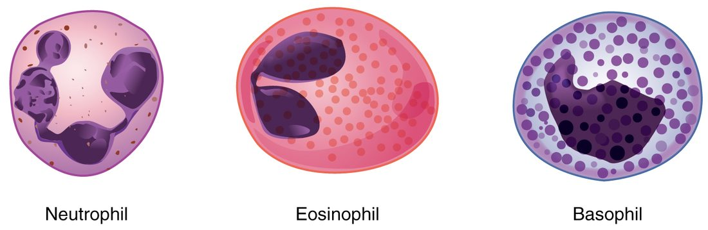

White blood cells and platelets
Leukocytes keep their nucleus and organelles, number about 4,500–11,000 per µL, and work mostly outside the blood, squeezing through capillary walls toward chemical signals.
Part 1 · Clinical hook
Why this matters
Jayden, 7, has been pale and tired for weeks, bruises easily and has had three fevers in a month. His white cell count is 58,000 per µL, five times normal, yet most of the cells are immature blasts. His hemoglobin is 7 g/dL and his platelet count is 20,000 per µL. How can a child with so many white cells keep getting infections? The answer lies in what normal white blood cells and platelets are, and where they come from.
Part 2 · Foundations
What this builds on
Part 3 · Prerequisite check
Quick check before you start
1. What does a macrophage do?
- It makes collagen fibers
- It engulfs and digests debris and microbes
- It stores fat
Show the answer
A macrophage is a large phagocyte: it engulfs bacteria, dead cells and debris and digests them in its lysosomes.
- It makes collagen fibers:
- Correct: It engulfs and digests debris and microbes:
- It stores fat:
2. How does a cell take in a whole bacterium?
- By phagocytosis
- By simple diffusion
- By a sodium–potassium pump
Show the answer
Phagocytosis is endocytosis of large particles: the membrane wraps around the particle and pinches off a vesicle containing it.
- Correct: By phagocytosis:
- By simple diffusion:
- By a sodium–potassium pump:
3. Which cells in the marrow shed platelets?
- Myeloid stem cells
- Megakaryocytes
- Reticulocytes
Show the answer
Megakaryocytes push arms of cytoplasm into marrow vessels, and the blood breaks them into platelets.
- Myeloid stem cells:
- Correct: Megakaryocytes:
- Reticulocytes:
Part 4 · Anatomy panel
Anatomy

With labels hidden, select a box to reveal its label.
Part 5 · Causal chain
How it works, step by step
- Bacteria enter a cut, and damaged cells and tissue macrophages release chemical signals.The cells lining nearby capillaries become sticky, and neutrophils in the passing blood slow down and stick to them.
- Neutrophils stuck to the capillary wall squeeze between its cells.They crawl through the tissue toward the highest concentration of the chemical signals, at the infection.
- At the infection, neutrophils engulf bacteria by phagocytosis.Their granules and a burst of toxic oxygen compounds kill the bacteria, and the neutrophils soon die, forming pus.
- Signals from the infection reach the marrow.The marrow releases stored and young neutrophils, including band cells, and the blood shows leukocytosis.
- Monocytes arrive over the next days and become macrophages.Long-lived macrophages clear dead neutrophils, bacteria and debris.
Part 6 · Key ideas
Key ideas
- A leukocyte (leuk- = white, -cyte = cell) is a white blood cell. Unlike red blood cells, leukocytes keep their nucleus and organelles, so they can make proteins and respond to signals. The five types are sorted by whether a stained smear shows granules in their cytoplasm.
- An antigen (from antibody generator: -gen = producing) is any molecule that the immune system recognizes as a specific target, often a protein or sugar chain on the surface of a microbe or cell. An antibody is a Y-shaped plasma protein released by cells descended from one kind of lymphocyte; the tips of its arms fit one antigen's shape the way a key fits one lock.
- A platelet (little plate), also called a thrombocyte (thromb- = clot, -cyte = cell), is not a whole cell. It is a fragment of a megakaryocyte, the giant marrow cell. A normal count is about 150,000 to 450,000 per microliter.
Part 7 · Core concept
Core concepts
Part 8 · Misconception
A common mistake
The wrong idea: A high white cell count means a strong immune defense.
What actually happens: A high count can mean the marrow is responding well to an infection, but in leukemia it means a single cancerous precursor is flooding the blood with cells that never mature and cannot fight infection. Those cells also crowd out normal marrow, so the patient has too few working neutrophils, red cells and platelets. What matters is which cells are high and whether they are mature, which is what the differential count shows.
Part 9 · Retrieval check
Check yourself
Anything you miss goes into your review queue.
1. Name the pinned cell.
- Neutrophil
- Eosinophil
- Basophil
- Monocyte
Show the answer
A nucleus of several lobes joined by thin strands, with faint lilac granules, marks a neutrophil.
- Correct: Neutrophil: Correct. Three to five lobes and faint granules: a neutrophil.
- Eosinophil: An eosinophil has a two-lobed nucleus and large red-orange granules.
- Basophil: A basophil is packed with large dark purple granules that hide its nucleus.
- Monocyte: A monocyte has a single kidney-shaped nucleus and no visible granules.
2. A traveler returns from a trip with a roundworm infection of his gut. Which leukocyte count is most likely to be raised?
- Basophils
- Eosinophils
- Neutrophils
- Monocytes
Show the answer
Eosinophils attack parasitic worms, which are too large to engulf, by releasing toxic granule proteins onto their surface. Worm infections raise the eosinophil count.
- Basophils: Basophils rarely rise, and they are not the main defense against worms.
- Correct: Eosinophils: Correct. Parasitic worms drive eosinophilia.
- Neutrophils: Neutrophils rise mainly in bacterial infections.
- Monocytes: Monocytes rise in long-lasting infections, not typically in worm infections.
3. After chemotherapy, a patient's white count is 1,500 per µL, and 30% of the cells are neutrophils. What is her absolute neutrophil count?
- 30 per µL
- 4,500 per µL
- 450 per µL
- 1,050 per µL
Show the answer
Absolute count = total × fraction = 1,500 × 0.30 = 450 per µL. That is below 500, so her risk of serious bacterial infection is very high.
- 30 per µL: 30 is the percentage, not a count.
- 4,500 per µL: 4,500 comes from multiplying by 3 instead of 0.30.
- Correct: 450 per µL: Correct. 1,500 × 0.30 = 450 neutrophils per µL.
- 1,050 per µL: 1,050 is the count of all the other white cells (70% of 1,500).
4. Jayden, 7, has a white count of 58,000 per µL, mostly immature blasts, a hemoglobin of 7 g/dL and a platelet count of 20,000 per µL. Why does he keep getting infections?
- His blasts cannot fight infection and crowd out normal marrow cells
- His anemia leaves too little oxygen for his white cells to work
- His high white count uses up his antibodies
- His low platelets let bacteria into his blood
Show the answer
In acute leukemia, one precursor multiplies without maturing. The blasts fill the blood but do not work, and by crowding the marrow they stop normal hematopoiesis, so he has few working neutrophils. The same crowding explains his anemia and low platelets.
- Correct: His blasts cannot fight infection and crowd out normal marrow cells: Correct. Many cells, few that work.
- His anemia leaves too little oxygen for his white cells to work: White cells do not fail from a hemoglobin of 7; the problem is that normal white cells are not being made.
- His high white count uses up his antibodies: Antibodies are not used up by white cell numbers.
- His low platelets let bacteria into his blood: Low platelets cause bruising and bleeding, not infections.
5. A monocyte leaves a capillary and enters an infected wound. What does it become?
- A neutrophil
- A lymphocyte
- A mast cell
- A macrophage
Show the answer
Monocytes circulate for a day to three, then leave the blood and mature into macrophages, long-lived phagocytes that clear bacteria, dead cells and debris.
- A neutrophil: Neutrophils are a separate granulocyte line; monocytes do not turn into them.
- A lymphocyte: Lymphocytes come from the lymphoid branch, not from monocytes.
- A mast cell: Mast cells are tissue cells with histamine granules, from a different precursor.
- Correct: A macrophage: Correct. A monocyte in the tissues becomes a macrophage.
6. A platelet circulates for about 7–10 days. What happens to it at the end of that time?
- It is filtered out of the blood by the kidneys
- It divides into two smaller platelets
- Macrophages in the spleen and liver engulf it
- It returns to the red marrow and is rebuilt there
Show the answer
Aging platelets change their surface, and macrophages, mainly in the spleen and liver, recognize and engulf them. The marrow replaces them with new platelets from megakaryocytes.
- It is filtered out of the blood by the kidneys: Platelets are far too large to pass the kidney's filter. They are removed whole by phagocytes.
- It divides into two smaller platelets: A platelet has no nucleus and cannot divide.
- Correct: Macrophages in the spleen and liver engulf it: Correct. Macrophages in the spleen and liver clear old platelets.
- It returns to the red marrow and is rebuilt there: Platelets do not go back to the marrow. New ones are shed by megakaryocytes, and old ones are engulfed.
7. A man has a greatly enlarged spleen. His marrow is normal, but his platelet count is 80,000 per µL. What best explains the low count?
- The spleen makes too much thrombopoietin
- The enlarged spleen holds far more of his platelets than usual
- Megakaryocytes move out of the marrow and into the spleen
- The spleen turns platelets into red blood cells
Show the answer
Normally about a third of the platelets are held in the spleen. An enlarged spleen holds many more, so fewer circulate, even though the marrow makes a normal number.
- The spleen makes too much thrombopoietin: Thrombopoietin comes mainly from the liver, and more of it would raise the count, not lower it.
- Correct: The enlarged spleen holds far more of his platelets than usual: Correct. The platelets are pooled in the spleen, not missing from the body.
- Megakaryocytes move out of the marrow and into the spleen: Megakaryocytes stay in the marrow; they do not migrate to the spleen.
- The spleen turns platelets into red blood cells: Platelets are fragments and cannot become red cells.
Part 10 · Summary
Summary
Leukocytes keep their nucleus and organelles, number about 4,500–11,000 per µL, and work mostly outside the blood, squeezing through capillary walls toward chemical signals. Granulocytes have visible granules: neutrophils (50–70%, many-lobed nucleus, first to engulf bacteria), eosinophils (red-orange granules, attack parasitic worms, gather in allergies) and basophils (dark granules of histamine). Agranulocytes lack visible granules: lymphocytes (large round nucleus; specific immunity, including cells that release antibodies) and monocytes (largest, kidney-shaped nucleus; become macrophages). An antigen is a molecule the immune system recognizes as a specific target; an antibody is a Y-shaped protein that binds one antigen. The differential count gives each type's share; leukocytosis and leukopenia are high and low totals. Leukemia is cancer of blood-forming cells in the marrow; lymphoma is cancer of lymphocytes in lymph nodes. Platelets (thrombocytes) are nucleus-free fragments of megakaryocytes, 150,000–450,000 per µL, living 7–10 days, with granules and contractile proteins that let them seal breaks in vessel walls.
Part 11 · Up next
What comes next
Part 12 · Connections